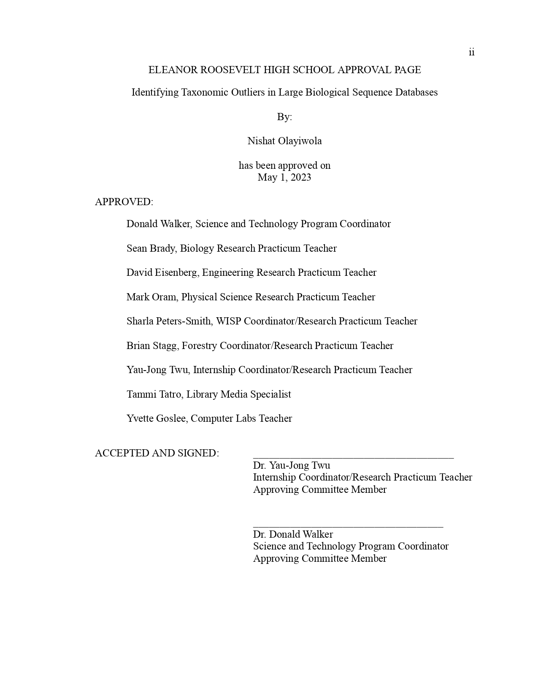

I Also Like Research
May 2024 to Present
Student Researcher
Children's Hospital of Philadelphia · InternshipPhiladelphia, Pennsylvania, United States · On-site
Conducting research to test the hypothesis that autophagic flux is impaired in 22qDSs related to Ctr.
Demonstrate that restoring lysosome intraluminal acidic pH boosts lysosomal function and restores mitochondria
genesis and turnover in 22q+Sz

Sep 2022 to Jun 2023
Intern
College Park, Maryland, United States · On-site
Research Topic: Identifying taxonomic outliers in large biological databases
This project involves studying the 16S rRNA gene, which is crucial for determining
bacterial taxonomy. By analyzing sequences with classifiers like the Ribosomal
Database Project (RDP), we aim to identify and understand the features leading to
classification errors and outliers, ultimately improving accuracy in bacterial
classification."

Jun 2021 to Aug 2021
Intern
RemoteResearch Topic: Binding affinity simulations of PLK receptors and small molecules
This internship provided me with the chance to dedicate over 100 hours in research and reading scientific papers, collecting data on our selected molecules, and compiling that information into a presentation that analyzes how these molecules work in hand with PLK receptors."